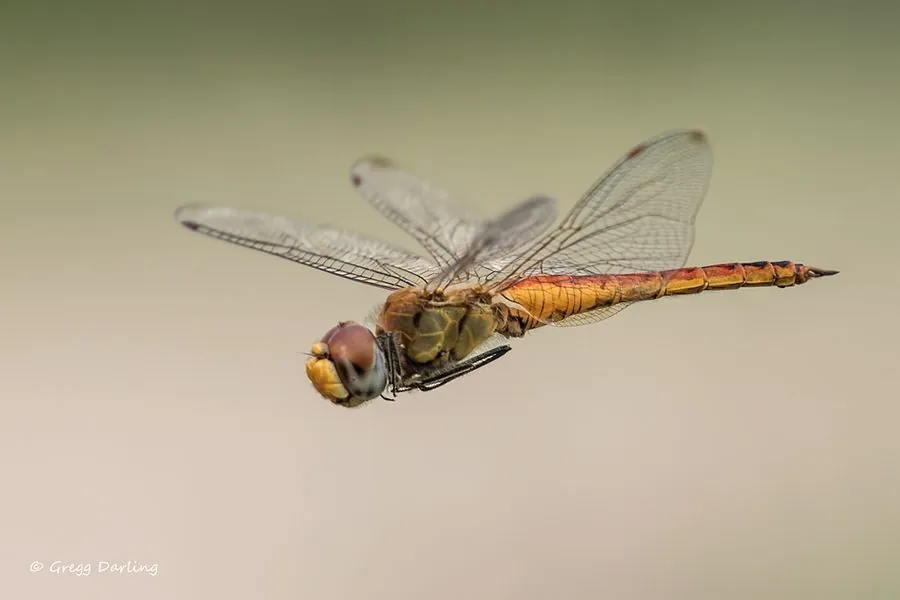

昆虫 · 动物界
黄蜻 Pantala flavescens

全球分布最广的蜻蜓之一，被称作全球蜻蜓，成虫擅长长距离迁飞，常在雨后成群盘旋捕食蚊蝇等飞虫。
- 分类
- 门节肢动物门纲昆虫纲目蜻蜓目科蜻科属黄蜻属
- 栖息环境
- 湖泊、池塘、水田和雨后临时水洼附近，成虫在开阔地上空群飞
- 地理分布
- 全球热带、亚热带和温带地区，是最广布的蜻蜓之一
- 保护级别
- 暂无评估
物种志
黄蜻成虫体长约 4.5–5 cm，翅展约 8–9 cm，体色橙黄至黄褐色，后翅基部有黄褐色斑块，翅脉清晰，复眼大而突出。停歇时双翅平展，是蜻科中体色偏黄的常见种类。
黄蜻几乎遍布全球热带、亚热带和温带地区，是著名的迁飞性蜻蜓，常受季风和降雨带驱动成群迁飞，有研究记录其可从印度跨越阿拉伯海到达非洲，单程数千千米。幼虫（水虿）生活在池塘、水田和雨后临时水洼中，发育极快，约 4–6 周即可羽化，以赶在水洼干涸前完成生活史。成虫在开阔地上空群飞，捕食蚊、蝇、飞蚁等小型昆虫，是重要的天敌昆虫，也常被当作天气变化的指示。黄蜻在中国各地也十分常见。
形态与习性
- 食性成虫捕食蚊、蝇等飞虫；幼虫捕食水生小动物
- 体长约 4.5–5 cm，翅展约 8–9 cm
- 生活史卵—水虿—成虫，水虿期可短至 4–6 周
- 迁徙受季风驱动可跨数千千米迁飞
- 生态作用捕食蚊蝇，是重要的天敌昆虫
- 繁殖雌雄在飞行中交配，雌虫点水产卵
趣味知识
- 黄蜻是全球分布最广的蜻蜓之一，几乎遍布各大洲热带与温带。
- 它的幼虫能在雨后临时水洼中快速发育，赶在水干前羽化。
- 有研究记录黄蜻可从印度跨越阿拉伯海迁飞至非洲，行程数千千米。